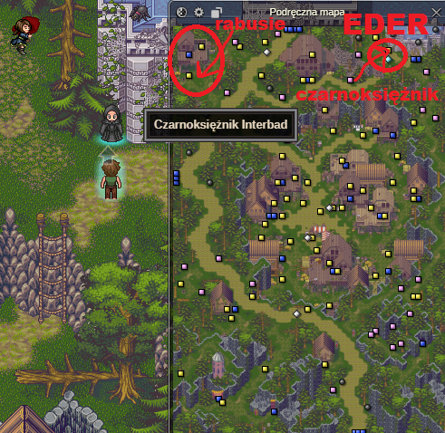

<body>
<h3>22lvl</h3> <br />
<a>Nad zakonem astralnym udajcie się do burmistrza po misje. (Mag i księgi Eder)</a> <br />
<a>Zabij rabusiów (Są w lewym górnym rogu mapki w Eder.)</a> <br />
<a>Wróć do zakonu planu astralnego w Eder.</a> <br />
<a>Udaj się do Czarnoksiężnika.</a>> <br />
 <br />
<a>Wejdź do zamku i wybij wszystkie demony. Na p.2 znajdziesz również Elitę Cerbera. Bez obaw, dasz radę go zabić!</a> <br />
<a>Po zabiciu wszystkich demonów, wyjdź z siedziby maga i porozmawiaj z czarnoksiężnikiem.</a> <br />
<a>Oddaj mu 3 książki. Pierwszych 2 nie będzie chciał.</a>> <br />
<a>Udaj się do zakonu równowagi w Eder, oddaj misję i w zakonie planu astralnego przeteleportuj się do Ithan. Udaj się do sprzedawcy Roana sprzedać przedmioty.</a> <br />
<a href="subpages/23-24lvl.html">23-24 lvl</a> <br />
</body>